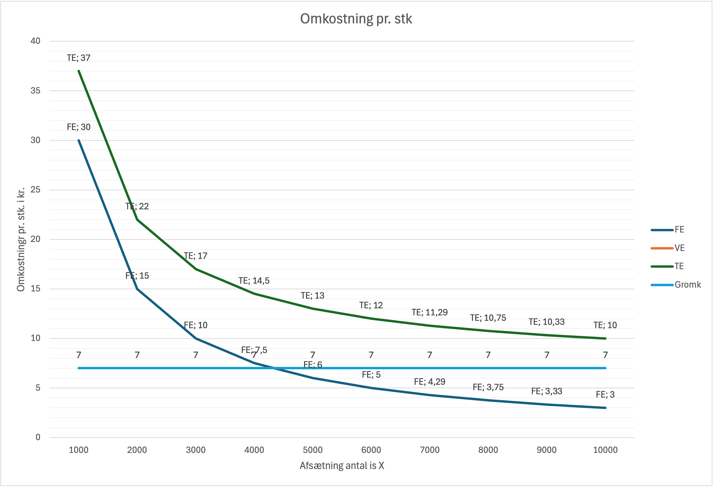
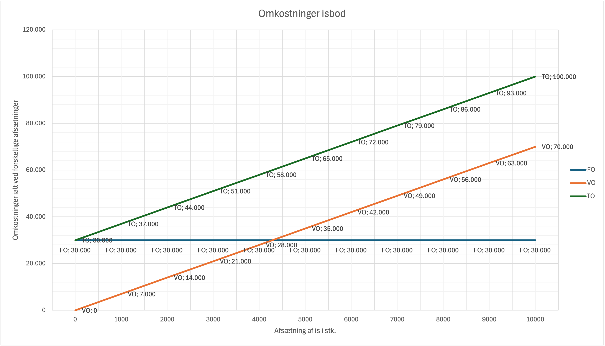
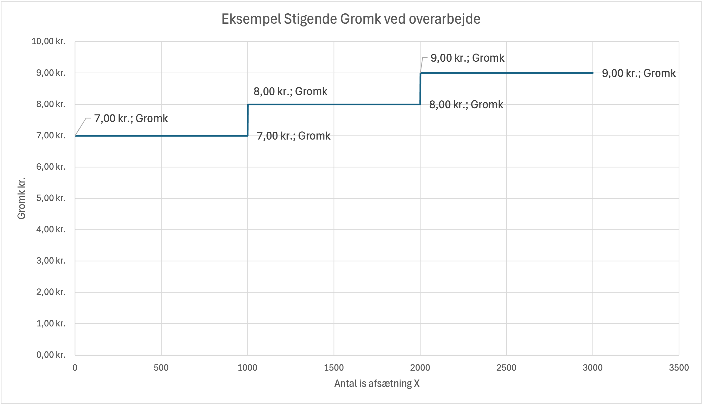
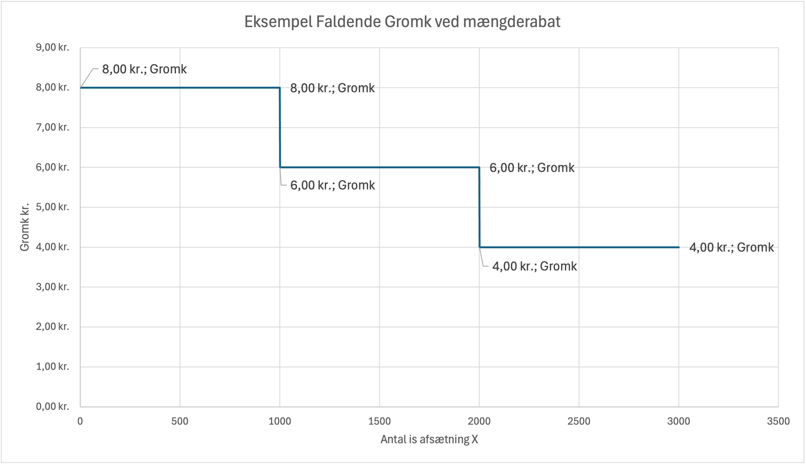
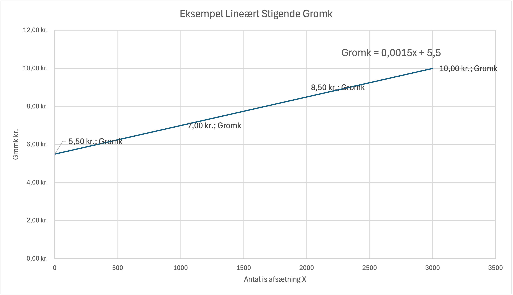
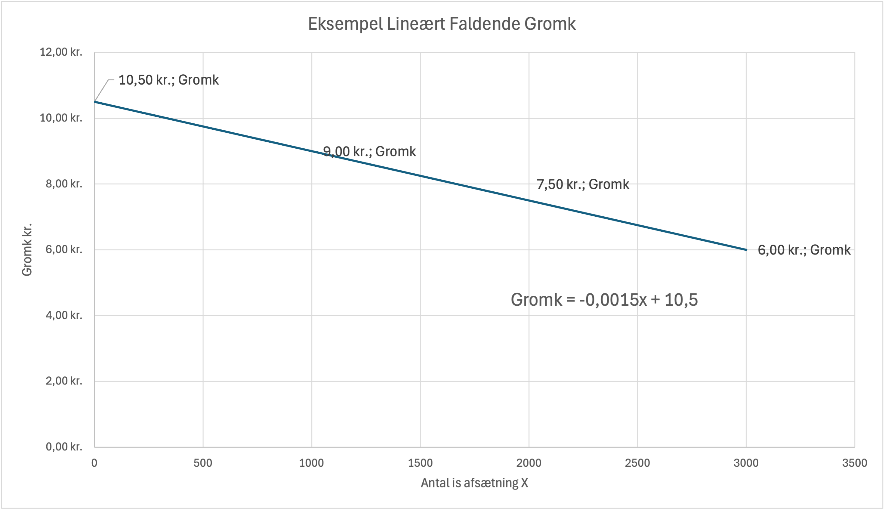

Virksomhedens Omkostningsforhold

Effektiv styring af omkostninger er afgørende for enhver virksomheds succes. Dette kapitel vil give en dybdegående forståelse af forskellige omkostningstyper, deres opførsel og betydning for beslutningstagning. Vi vil se på, hvordan virksomheder kan analysere og styre deres omkostninger for at maksimere rentabiliteten.
I dette kapitel ser vi nærmere på:
- Faste og Variable Omkostninger: Hvordan adskiller de sig, og hvilken betydning har det for virksomhedens økonomi?
- Omkostningsforløb: Analyse af omkostningernes opførsel ved forskellige produktionsniveauer.
- Enhedsomkostninger: Hvad koster det i gennemsnit at producere en enhed?
- Grænseomkostninger: Hvad koster det at producere én enhed mere?
- Beslutningsrelevante Omkostninger: Hvilke omkostninger skal indgå i beslutningsgrundlaget?
- Produktionsmetoder: Hvordan vælges den mest effektive produktionsmetode?
Faste og Variable Omkostninger
Opdelingen af omkostninger i faste og variable er grundlæggende for omkostningsstyring. De to omkostningstyper reagerer forskelligt på ændringer i produktionsniveauet.
| Virksomhed | Faste omkostninger (eksempler) | Variable omkostninger (eksempler) |
|---|---|---|
| LEGO | Fabrikker i Billund: 200 mio. kr./år | Plastik til klodser: 5 kr./kg |
| Tesla | Gigafactory i Berlin: 500 mio. kr./år | Batterier til elbiler: 15.000 kr./stk |
| Novo Nordisk | Produktionsanlæg i Bagsværd: 1.000 mio. kr./år | Insulin råvarer: 50 kr./dosis |
| Carlsberg | Bryggeriet i København: 150 mio. kr./år | Malt og humle: 3 kr./liter øl |
| H&M | Butiksleje Strøget: 1 mio. kr./år | Produktionsomkostning pr. t-shirt: 20 kr. |
| McDonald's | Restaurant franchise: 500.000 kr./år | Råvarer pr. Big Mac: 15 kr. |
Faste omkostninger (FO):
- Er omkostninger, der ikke ændrer sig når produktionsniveauet ændres
- Eksempler: Husleje, fast løn til medarbejdere, forsikringer
- Disse omkostninger forbliver konstante uanset om virksomheden producerer 100 eller 1000 enheder
- Faste omkostninger er også kendt som kapacitetsomkostninger
- Er omkostninger, der ændrer sig når produktionsniveauet ændres
- Eksempler: Råvarer, direkte arbejdskraft, energi
- Stiger jo flere enheder der produceres
- Variable omkostninger er også kendt som produktionsomkostninger, for produktionsvirksomheder
- Variable omkostninger er også kendt som direkte omkostninger
Eksempel: Isbod
Lad os se på et konkret eksempel med en isbod for at forstå forskellen mellem faste og variable omkostninger:
Faste omkostninger (FO):
- Er omkostninger, der ikke ændrer sig med mængden af solgte is
- Forbliver konstante uanset om isboden sælger 100 eller 1000 is
- Eksempler: Husleje, fast løn til medarbejdere, forsikringer
Variable omkostninger (VO):
- Er omkostninger, der ændrer sig direkte med mængden af solgte is
- Stiger jo flere is der sælges
- Eksempler: Is, kugler, toppings, papirbægere
I nedenstående tabel ser vi et detaljeret overblik over de forskellige omkostningstyper og deres betydning for isboden:

| Omkostningstype | Forkortelse (DK) | Forkortelse (EN) | Forklaring |
|---|---|---|---|
| Variable omkostninger | VO | VC (Variable Cost) | De omkostninger, der ændres i takt med den producerede eller solgte mængde. Disse omkostninger er direkte relaterede til produktionsniveauet. Måles i kr. pr. tidsperiode. Eksempler: Råmaterialer, direkte arbejdskraft, energi. Eksempel fra isbod: Is pr. kugle: 2 kr. Kugle: 1 kr. Toppings: 3 kr. Papirbæger: 1 kr. Her har VO et lineært forløb VO vokser med 7 kr. pr. is. dvs. hældningskoefficienten a er 7. Når vi sælger 0 is, er VO = 0 kr. dvs. b = 0. Funktionsforskriften for VO er således VO = aX + b = 7X + 0 = 7X |
| Faste omkostninger | FO | FC (Fixed Cost) | De omkostninger, der ikke ændres i takt med den producerede eller solgte mængde. Disse omkostninger forbliver konstante inden for en given kapacitetsgrænse. Måles i kr. pr. tidsperiode. Eksempler: Husleje, afskrivninger, fast løn. Eksempel fra isbod: Husleje: 5.000 kr. pr. måned Fast løn: 25.000 kr. pr. måned Total FO: 30.000 kr. pr. måned Her har FO et konstant forløb FO er konstant 30.000 kr. pr. måned. Funktionsforskriften for FO er således FO = aX + b = 0X + 30.000 = 30.000 |
| Totale omkostninger | TO | TC (Total Cost) | De samlede omkostninger ved en given aktivitet i en given periode. Inkluderer både faste og variable omkostninger. Måles i kr. pr. tidsperiode. Formel: TO = FO + VO Eksempel fra isbod: Hvis der sælges 1000 is om måneden: FO: 30.000 kr. (husleje, fast løn) VO: 1000 × 7 kr. = 7.000 kr. (is, kugler, toppings) Total TO: 37.000 kr. Her har TO et lineært forløb TO vokser med 7 kr. pr. is. dvs. hældningskoefficienten a er 7. Når vi sælger 0 is, er TO = 30.000 kr. dvs. b = 30.000. Funktionsforskriften for TO er således TO = aX + b = 7X + 30.000 Vi ved også at TO = FO + VO = 30.000 + 7X Så begge metoder giver samme resultat. |
| Totale enhedsomkostninger | TE | ATC (Average Total Cost) | Totale omkostninger pr. enhed ved en given mængde. Repræsenterer den gennemsnitlige omkostning ved at producere én enhed. Måles i kr. pr. stk. Formel: TE = TO / Produktionsmængde Kaldes også totale gennemsnitsomkostninger. Eksempel fra isbod: Hvis der sælges 1000 is: TE = 37.000 kr. / 1000 = 37 kr. pr. is Vi får den generelle funktionsforskrift for TE = TO / X = (30.000 + 7X) / X = 30.000 / X + 7 |
| Variable enhedsomkostninger | VE | AVC (Average Variable Cost) | Variable omkostninger pr. enhed ved en given mængde. Repræsenterer den gennemsnitlige variable omkostning ved at producere én enhed. Måles i kr. pr. stk. Formel: VE = VO / Produktionsmængde Kaldes også variable gennemsnitsomkostninger. Eksempel fra isbod: VE = 7 kr. pr. is (konstant) Vi får den generelle funktionsforskrift for VE = VO / X = 7X / X = 7 |
| Faste enhedsomkostninger | FE | AFC (Average Fixed Cost) | Faste omkostninger pr. enhed ved en given mængde. Repræsenterer den gennemsnitlige faste omkostning ved at producere én enhed. Måles i kr. pr. stk. Formel: FE = FO / Produktionsmængde Kaldes også faste gennemsnitsomkostninger. Eksempel fra isbod: Hvis der sælges 1000 is: FE = 30.000 kr. / 1000 = 30 kr. pr. is Vi får den generelle funktionsforskrift for FE = FO / X = 30.000 / X |
| Grænseomkostninger | Gromk | MC (Marginal Cost) | Ændring i totale eller variable omkostninger ved en ændring i produktionens størrelse på en enhed. Repræsenterer den præcise omkostning ved at producere den sidste enhed. Måles i kr. pr. stk. Formel: Gromk = Ændring i TO / Ændring i mængde = ΔTO / ΔX Eller du kan beregne Gromk ud fra variable omkostninger VO: Gromk = Ændring i VO / Ændring i mængde = ΔVO / ΔX Eksempel fra isbod: Gromk = 7 kr. (Her er Gromk det samme som VE, da faste omkostninger ikke ændrer sig) Har man givet en funktionsforskrift for en omkostningsfunktion VO eller TO, kan man beregne Gromk ved at differentiere funktionsforskriften dvs. Gromk = VO'= TO' I vores isbod er funktionsforskriften for VO= 7X og TO = 30.000 + 7X - Vi kan så finde Gromk ved at differentiere funktionsforskriften for VO og TO Gromk = VO'= 1*7X1-1 = 7X 0 = 7 Gromk = TO'= 0*30.000X 0-1 + 1*7X1-1 = 0 + 7 = 7 Vi får altså samme resultat Gromk = 7 kr. pr. is Husk matematik regnereglerne: Potensregnereglerne X0 = 1 At differentiere betyder at man skal gange med eksponenten og trække 1 fra eksponenten, en konstant differentieres til 0 f(x) = axn => f'(x) = n*axn-1 dvs. f.eks. f(x) = 2X3 => f'(x) = 3*2X3-1 = 6X2 f(x) = 5X4 => f'(x) = 4*5X4-1 = 20X3 f(x) = 10 = 10X0 => f'(x) = 0*10X0-1 = 0 Bemærk her er Gromk = VE, da VE er konstant 7 kr. pr. is. Men hvis VE er en lineær funktion, så kan Gromk hurtigt findes som VE med den dobbelte hældning, dvs. hvis: VE = aX + b, så er Gromk = 2aX + b. |
Vigtige overvejelser for isboden:
- For at være rentabel skal prisen pr. is være højere end de totale enhedsomkostninger (TE)
- De faste enhedsomkostninger (FE) falder jo flere is der sælges, hvilket gør det billigere at producere hver is
- Grænseomkostningerne (Gromk) er konstante på 7 kr. pr. is, da de variable omkostninger er lineære
- For at nå break-even point skal isboden sælge nok is til at dække både de faste omkostninger (30.000 kr.) og de variable omkostninger (7 kr. pr. is)
- En afsætning på 1000 is om måneden synes lav det er 33 is om dagen, det betyder at isboden skal sætte en meget høj salgspris pr. is for at være rentabel.
- Virksomheden har relativt store faste omkostninger (30.000 kr. pr. måned), her ville en timelønsansat være en fordel, så kan man holde lukket når det regner eller er dårligt vejr.
- Når vejret er godt, isboden måske øge personalet for at kunne håndtere den stigende efterspørgsel.
Eksempel: Isboden ved forskellige produktionsniveauer, med en fastansat.
| Mængde X stk. | FO | FE | VO | VE | TO | TE | Gromk |
|---|---|---|---|---|---|---|---|
| 0 | 30.000 | - | 0 | - | 30.000 | - | 7 |
| 1000 | 30.000 | 30 | 7.000 | 7 | 37.000 | 37 | 7 |
| 2000 | 30.000 | 15 | 14.000 | 7 | 44.000 | 22 | 7 |
| 3000 | 30.000 | 10 | 21.000 | 7 | 51.000 | 17 | 7 |
| 4000 | 30.000 | 7,5 | 28.000 | 7 | 58.000 | 14,5 | 7 |
| 5000 | 30.000 | 6 | 35.000 | 7 | 65.000 | 13 | 7 |
| 6000 | 30.000 | 5 | 42.000 | 7 | 72.000 | 12 | 7 |
| 7000 | 30.000 | 4,29 | 49.000 | 7 | 79.000 | 11,29 | 7 |
| 8000 | 30.000 | 3,75 | 56.000 | 7 | 86.000 | 10,75 | 7 |
| 9000 | 30.000 | 3,33 | 63.000 | 7 | 93.000 | 10,33 | 7 |
| 10000 | 30.000 | 3 | 70.000 | 7 | 100.000 | 10 | 7 |


I dette eksempel med isboden er grænseomkostningerne konstante på 7 kr. pr. is, da de variable omkostninger er lineære, derfor ser vi kun en graf for Gromk (grænseomkostninger) på figuren da VE ligger bag denne graf.
Dette betyder, at det koster det samme at producere den første is som den sidste is. Dette er typisk for virksomheder med simple produktionsprocesser og konstante variable omkostninger pr. enhed.
Omkostningsforløb ved forskellige produktionsniveauer
Ved analyse af omkostningsforløbet kan vi se følgende mønstre:
- Faste omkostninger (FO) forbliver konstante på 30.000 kr. uanset produktionsniveau
- Variable omkostninger (VO) stiger lineært med 7 kr. pr. is
- Totale omkostninger (TO) stiger lineært med 7 kr. pr. is, startende fra 30.000 kr.
- Variable enhedsomkostninger (VE) forbliver konstante på 7 kr. pr. is
- Faste enhedsomkostninger (FE) falder jo flere is der sælges
- Totale enhedsomkostninger (TE) falder også med stigende produktion
Forskellige omkostningsforløb
I virkeligheden følger omkostninger sjældent en perfekt lineær kurve. Her er nogle praktiske eksempler på forskellige omkostningsforløb:
| Virksomhed | Omkostningstype | Forløb | Forklaring |
|---|---|---|---|
| Netto | Mængderabat | Trappeformet faldende | 0-1000 stk: 10 kr/stk 1001-5000 stk: 8 kr/stk 5001+ stk: 6 kr/stk |
| Carlsberg | Overarbejde | Trappeformet stigende | 0-37 timer: 150 kr/time 38-45 timer: 200 kr/time 45+ timer: 250 kr/time |
| LEGO | Produktionsomkostninger | Lineært stigende | Stiger gradvist med 2 kr/stk for hver 1000 stk over 100.000 stk |
| H&M | Transportomkostninger | Lineært faldende | Falder med 0,5 kr/stk for hver 1000 stk over 5000 stk |
Eksempel: Isbod med trappeformet stigende grænseomkostninger
Lad os se på en isbod, hvor grænseomkostningerne stiger ved overarbejde:
| Mængde X stk. afsætningsinterval | Gromk |
|---|---|
| 0-1000 stk. | 7 kr |
| 1001-2000 stk. | 8 kr |
| 2001+ stk. | 9 kr |

Eksempel: Isbod med trappeformet faldende grænseomkostninger
Nu ser vi på en isbod, hvor grænseomkostningerne falder ved mængderabat på is:
| Mængde X stk. afsætningsinterval | Gromk |
|---|---|
| 0-1000 stk. | 8 kr |
| 1001-2000 stk. | 6 kr |
| 2001+ stk. | 4 kr |

Eksempel: Isbod med lineært stigende grænseomkostninger
Her ser vi på en isbod, hvor grænseomkostningerne stiger gradvist liniært med produktionen:
| Mængde X stk. afsætning | Gromk |
|---|---|
| 0 stk. | 5,5 kr |
| 1000 stk. | 7 kr |
| 2000 stk. | 8,5 kr |
| 3000 stk. | 10 kr |

Vi kan bestemme funktionsforskriften for grænseomkostningerne ved at indsætte punkterne i f.eks. Excel og tilføje en trendlinje.
Vi kan også udregne funktionsforskriften når vi har to punkter.
Eksempelvis har vi punkterne (0,5,5) og (3000,10)
Vi indsætter punkterne i formlen for en lineær funktion y = ax + b
Vi får derved ligningen 5,5 = a*0 + b, hvor vi kan se, at b = 5,5
Vi får derved ligningen 10 = a*3000 + 5,5, hvor vi kan løse for a
a = (10-5,5) / 3000 = 0,0015
Vi får derved funktionsforskriften y = 0,0015x + 5,5
Eksempel: Isbod med lineært faldende grænseomkostninger
Her ser vi på en isbod, hvor grænseomkostningerne falder gradvist liniært med produktionen:
| Mængde X stk. afsætning | Gromk |
|---|---|
| 0 stk. | 10,5 kr |
| 1000 stk. | 9 kr |
| 2000 stk. | 7,5 kr |
| 3000 stk. | 6 kr |

Vi kan bestemme funktionsforskriften for grænseomkostningerne ved at indsætte punkterne i f.eks. Excel og tilføje en trendlinje.
Vi kan også udregne funktionsforskriften når vi har to punkter.
Eksempelvis har vi punkterne (0,10,5) og (3000,6)
Vi indsætter punkterne i formlen for en lineær funktion y = ax + b
Vi får derved ligningen 10,5 = a*0 + b, hvor vi kan se, at b = 10,5
Vi får derved ligningen 6 = a*3000 + 10,5, hvor vi kan løse for a
a = (6-10,5) / 3000 = -0,0015
Vi får derved funktionsforskriften y = -0,0015x + 10,5
Vigtige overvejelser ved forskellige omkostningsforløb
- Trappeformede grænseomkostninger opstår ofte ved overarbejde eller mængderabat
- Lineært stigende grænseomkostninger kan skyldes ineffektivitet ved høj produktion
- Lineært faldende grænseomkostninger kan skyldes læringseffekter eller stordriftsfordele
- Det er vigtigt at kende grænseomkostningernes forløb for at kunne optimere produktionen
Beslutningsrelevans
Beslutningsrelevante omkostninger er de omkostninger, der er relevante for en specifik beslutning. Det er kun de omkostninger, der ændrer sig som følge af beslutningen, der skal indgå i beslutningsgrundlaget. Dette er en vigtig faktor i beslutningstagning, da det hjælper med at fokusere på de relevante omkostninger.
| Virksomhed | Beslutning | Beslutningsrelevante omkostninger | Forklaring |
|---|---|---|---|
| LEGO | Lancere ny serie | Produktionsomkostninger, markedsføring | Kun de omkostninger der ændrer sig ved lanceringen |
| Tesla | Bygge ny fabrik | Byggeomkostninger, nye medarbejdere | Kun de omkostninger der opstår ved den nye fabrik |
| NVIDIA | Udvide produktion | Ekstra råvarer, overarbejde | Kun de variable omkostninger ved udvidelsen |
| Novo Nordisk | Udvide forskning | Nye forskere, udstyr | Kun de omkostninger der opstår ved udvidelsen |
| Carlsberg | Ændre emballage | Nye emballageomkostninger | Kun forskellen i emballageomkostninger |
| H&M | Åbne ny butik | Butiksleje, nye medarbejdere | Kun de omkostninger der opstår ved den nye butik |
Eksempel: Isbod med beslutningsrelevante omkostninger
Lad os se på forskellige beslutninger i en isbod og deres beslutningsrelevante omkostninger:
| Beslutning | Beslutningsrelevante omkostninger | Forklaring |
|---|---|---|
| Udvide åbningstid | Ekstra løn, strøm, is | Kun de omkostninger der ændrer sig ved udvidelsen |
| Købe ny ismaskine | Købspris, ekstra strøm | Kun de omkostninger der opstår ved den nye maskine |
| Ændre is-sorter | Forskel i råvareomkostninger | Kun forskellen i omkostninger mellem sorterne |
| Ansætte ekstra medarbejder | Løn, uniform, træning | Kun de omkostninger der opstår ved den nye medarbejder |
Vigtige overvejelser ved beslutningsrelevante omkostninger
- Kun de omkostninger der ændrer sig skal indgå i beslutningen
- Faste omkostninger er ofte ikke beslutningsrelevante
- Det er vigtigt at identificere alle relevante omkostninger
- Beslutningsrelevante omkostninger kan være både faste og variable
Irrelevante omkostninger (Sunk Costs)
Vi har tidligere set på begrebet sunk costs i mikroøkonomi. Irrelevante omkostninger er omkostninger, der allerede er opstået og ikke kan påvirkes af fremtidige beslutninger. Disse omkostninger skal ikke indgå i beslutningsgrundlaget, da de ikke påvirker den fremtidige økonomi.
| Virksomhed | Beslutning | Irrelevante omkostninger | Forklaring |
|---|---|---|---|
| LEGO | Lancere ny serie | Udgifter til tidligere forskning | Disse omkostninger er allerede opstået og kan ikke påvirkes |
| Tesla | Bygge ny fabrik | Udgifter til tidligere markedsundersøgelser | Disse omkostninger er sunk costs og skal ikke indgå i beslutningen |
| NVIDIA | Udvide produktion | Afskrivninger på eksisterende maskiner | Disse omkostninger er allerede opstået og kan ikke ændres |
| Novo Nordisk | Udvide forskning | Udgifter til tidligere kliniske studier | Disse omkostninger er sunk costs og skal ikke indgå i beslutningen |
| Carlsberg | Ændre emballage | Udgifter til tidligere emballagedesign | Disse omkostninger er allerede opstået og kan ikke påvirkes |
| H&M | Åbne ny butik | Udgifter til tidligere markedsanalyse | Disse omkostninger er sunk costs og skal ikke indgå i beslutningen |
Eksempel: Isbod med irrelevante omkostninger
Lad os se på forskellige beslutninger i en isbod og deres irrelevante omkostninger:
| Beslutning | Irrelevante omkostninger | Forklaring |
|---|---|---|
| Udvide åbningstid | Afskrivninger på eksisterende ismaskine | Disse omkostninger er allerede opstået og kan ikke ændres |
| Købe ny ismaskine | Udgifter til tidligere reparationer af gammel maskine | Disse omkostninger er sunk costs og skal ikke indgå i beslutningen |
| Ændre is-sorter | Udgifter til tidligere markedsundersøgelser | Disse omkostninger er allerede opstået og kan ikke påvirkes |
| Ansætte ekstra medarbejder | Udgifter til tidligere medarbejdertræning | Disse omkostninger er sunk costs og skal ikke indgå i beslutningen |
Vigtige overvejelser ved irrelevante omkostninger
- Irrelevante omkostninger er allerede opstået og kan ikke påvirkes
- De skal ikke indgå i beslutningsgrundlaget
- Det er vigtigt at kunne skelne mellem relevante og irrelevante omkostninger
- Irrelevante omkostninger kan være svære at ignorere psykologisk
Offeromkostninger
Offeromkostninger har vi tidligere set på i mikroøkonomi, det er en beslutningsorienteret omkostningsdefinition, der fokuserer på det man ofrer ved at vælge én handling frem for en alternativ handling.
Offeromkostninger kaldes også opportunity costs eller alternativomkostninger.
| Virksomhed | Beslutning | Offeromkostning | Forklaring |
|---|---|---|---|
| LEGO | Bygge ny fabrik | Mistet renteindtægt på investeringen | LEGO ofrer den renteindtægt de kunne have fået ved at placere pengene i banken |
| Tesla | Bygge ny Gigafactory | Mistet udvikling af selvkørende teknologi | Tesla ofrer den udvikling de kunne have opnået ved at investere i forskning i stedet |
| NVIDIA | Fokusere på AI-chips | Mistet salg af gaming-grafikkort | NVIDIA ofrer det salg de kunne have fået på deres eksisterende gaming-produkter |
| Novo Nordisk | Udvide insulinproduktion | Mistet udvikling af nye diabetesmediciner | Novo Nordisk ofrer den innovation de kunne have opnået ved at fokusere på forskning |
| Carlsberg | Lancere nyt øl | Mistet salg af eksisterende øl | Carlsberg ofrer det salg de kunne have fået på deres eksisterende øl |
| H&M | Åbne ny butik | Mistet lejeindtægt | H&M ofrer den lejeindtægt de kunne have fået ved at udleje lokalerne |
Eksempel: Isbod med offeromkostninger
Lad os se på en isbod, hvor ejeren overvejer at udvide åbningstiden:
| Beslutning | Offeromkostning | Værdi |
|---|---|---|
| Udvide åbningstid med 2 timer | Mistet fritid | 500 kr. (værdi af fritid) |
| Ansætte ekstra medarbejder | Mistet overskud på egen arbejdskraft | 200 kr. pr. time |
| Købe ny ismaskine | Mistet renteindtægt på investeringen | 50.000 kr. × 5% = 2.500 kr. pr. år |
Vigtige overvejelser ved offeromkostninger
- Offeromkostninger er relateret til en specifik beslutning
- De inkluderer både direkte omkostninger og mistede muligheder
- Offeromkostninger er ikke altid lette at kvantificere
- De er vigtige at overveje ved strategiske beslutninger
Reversibilitet
Reversibilitet refererer til hvor nemt og kostbart det er at ændre en beslutning. En beslutning er reversibel, hvis den kan ændres uden store omkostninger eller tab. Dette er en vigtig faktor i beslutningstagning, da det påvirker risikoen ved forskellige valg.
| Virksomhed | Beslutning | Reversibilitet | Forklaring |
|---|---|---|---|
| LEGO | Ændre produktdesign | Høj | Let at ændre design før produktion starter, lav omkostning ved ændring |
| Tesla | Bygge ny fabrik | Lav | Meget kostbart at ændre eller nedlægge en færdigbygget fabrik |
| NVIDIA | Ændre chip-design | Medium | Kostbart at ændre under produktion, men muligt før masseproduktion |
| Novo Nordisk | Udvide produktion | Lav | Meget kostbart at nedlægge eller ændre medicinalproduktion |
| Carlsberg | Ændre øl-recept | Medium | Kan ændres, men kræver ny godkendelse og markedsføring |
| H&M | Ændre kollektion | Høj | Let at ændre design og produktion, lav omkostning ved ændring |
Eksempel: Isbod med reversibilitet
Lad os se på forskellige beslutninger i en isbod og deres reversibilitet:
| Beslutning | Reversibilitet | Omkostning ved ændring |
|---|---|---|
| Introducere lakridschili-is | Høj | Kun omkostningerne ved at købe nye varer |
| Ændre åbningstider | Høj | Minimale omkostninger, kun personaleprogram |
| Købe ny ismaskine | Lav | Stor tab ved salg af brugt maskine |
| Ændre priser | Høj | Kun omkostninger ved ny prisskilt |
Vigtige overvejelser ved reversibilitet
- Høj reversibilitet giver mere fleksibilitet og mindre risiko
- Lav reversibilitet kræver mere grundig analyse før beslutning
- Reversibilitet påvirker virksomhedens evne til at tilpasse sig ændringer
- Det er vigtigt at overveje reversibilitet ved store investeringer
Specielle omkostningsfunktioner
I den virkelige verden vil vi sjældent se en omkostningsfunktion, der er konstante eller lineære funktioner specielt hvis man har med mere komplekse produktionsprocesser at gøre.
Når vi i de følgende kapitler regner på for at bestemme den optimale pris og afsætning benytter vi disse noget forenklede omkostningsfunktioner.
Omkostningsfunktioner vil dog i virkeligheden kan have forskellige forløb afhængigt af, hvordan omkostningerne udvikler sig i forhold til produktionsmængden.
Vi skelner mellem tre hovedtyper:
- Degressive funktioner: Omkostningerne stiger mindre end proportionalt med mængden (faldende grænseomkostninger)
- Konstante funktioner: Omkostningerne stiger proportionalt med mængden (konstante grænseomkostninger)
- Progressive funktioner: Omkostningerne stiger mere end proportionalt med mængden (stigende grænseomkostninger)
Eksempel: Vinmarksejerens Omkostninger
Lad os følge en vinmarksejer, der skal producere vin. Processen involverer flere trin:
- Plukke druer
- Stampe druer (uden sko på!)
- Fermentere mosten
- Flaskesætte vinen
Omkostningerne udvikler sig forskelligt afhængigt af antal medarbejdere:
| Antal medarbejdere | Omkostninger pr. flaske | Forklaring |
|---|---|---|
| 1 | 125 kr. | Bonden plukker først druerne, tager sko og sokker af, tramper rundt i druerne, vasker fødder, tager sko på igen, går ud og plukker flere druer, tager sko af igen, tramper... og sådan fortsætter det hele dagen. Det tager lang tid! |
| 2 | 100 kr. | Nu kan den ene plukke druer mens den anden tramper. Det går meget bedre, men de skal stadig vente på hinanden, når de skifter opgaver. |
| 3 | 80 kr. | Optimal arbejdsdeling! Den ene plukker, den anden tramper, og den tredje flaskesætter. Ingen ventetid, perfekt flow! |
| 4 | 85 kr. | Nu begynder det at blive trangt i vinkælderen. De står og snakker om fodbold og går i vejen for hinanden. Den ene spilder most på gulvet fordi den anden skubber til ham. |
| 5 | 155 kr. | Kaos! Alle snakker på én gang, ingen kan høre hinanden, og der er druer over det hele. Den ene spilder en hel tønde most fordi han vender sig for hurtigt og rammer den anden i ryggen. Det er blevet en dyr fornøjelse! |
Dette eksempel viser:
- Degressive omkostninger: Fra 1 til 3 medarbejdere falder omkostningerne pr. flaske - det går fra at være en enkelt træt bonde til et velorganiseret team
- Progressive omkostninger: Fra 3 til 5 medarbejdere stiger omkostningerne pr. flaske - det bliver for mange kokke i køkkenet!
- Optimalt antal: 3 medarbejdere giver de laveste omkostninger pr. flaske - det er det perfekte antal for en lille vinproduktion
| Virksomhed | Omkostningstype | Eksempel | Forklaring |
|---|---|---|---|
| Tesla | Progressiv | Produktion af Model Y | Ved høj produktion stiger omkostningerne mere end proportionalt pga. overarbejde, ekstra skift og øget kvalitetskontrol |
| Novo Nordisk | Progressiv | Insulinproduktion | Når produktionen nærmer sig kapacitetsgrænsen, stiger omkostningerne til kvalitetssikring og validering markant |
| LEGO | Progressiv | Specialklodser | Ved produktion af særlige farver/former stiger omkostningerne pga. hyppigere maskinomstilling og mindre batchstørrelser |
| H&M | Konstant | T-shirt produktion | Fast pris pr. t-shirt fra leverandører uanset ordrestørrelse |
| Carlsberg | Konstant | Standardøl | Faste råvarepriser og standardiseret produktionsproces giver konstante omkostninger pr. flaske |
| McDonald's | Konstant | Big Mac | Standardiserede ingredienser og processer giver samme omkostning pr. burger |
| NVIDIA | Degressiv | GPU-produktion | Faldende enhedsomkostninger pga. læringskurve og optimering af produktionsprocesser |
| Mærsk | Degressiv | Containertransport | Jo flere containere der transporteres, jo lavere bliver omkostningen pr. container |
| Netflix | Degressiv | Streaming | Marginale omkostninger pr. bruger falder med antal brugere pga. bedre udnyttelse af serverkapacitet |
Eksempel
| Mængde (X) | Variable Omk. (VO) | Variable Enheds. (VE) | Grænseomk. (GROMK) | Faste Omk. (FO) | Total Enheds. (TE) | Totale Omk. (TO) |
|---|---|---|---|---|---|---|
| 0 | 0 | - | - | 200 | - | 200 |
| 5 | 21 | 4,2 | 1 | 200 | 44,2 | 221 |
| 10 | 36 | 3,6 | 5 | 200 | 23,6 | 236 |
| 15 | 66 | 4,4 | 6 | 200 | 17,73 | 266 |
| 20 | 96 | 4,8 | 6 | 200 | 14,8 | 296 |
| 25 | 161 | 6,44 | 21 | 200 | 14,44 | 361 |
| 30 | 341 | 11,37 | 46 | 200 | 18,03 | 541 |
Analyse af omkostningsfunktionerne:
1. Degressive omkostninger (0-10):
- Variable enhedsomkostninger falder fra 4,2 kr. til 3,6 kr.
- Indikerer stordriftsfordele i opstartsfasen
- Totale enhedsomkostninger falder markant pga. bedre udnyttelse af faste omkostninger
2. Konstante omkostninger (10-20):
- Grænseomkostningerne er relativt stabile omkring 6 kr.
- Variable enhedsomkostninger ligger mellem 3,6-4,8 kr.
- Repræsenterer optimal produktionskapacitet
3. Progressive omkostninger (20-30):
- Grænseomkostningerne stiger kraftigt fra 6 kr. til 46 kr.
- Variable enhedsomkostninger stiger fra 4,8 kr. til 11,37 kr.
- Indikerer kapacitetsbegrænsninger i produktionen
Degressive omkostninger (0-10 enheder)
I intervallet 0-10 enheder ser vi et typisk degressivt omkostningsforløb, hvor omkostningerne stiger mindre end proportionalt med mængden. Dette betyder:
- Variable enhedsomkostninger falder fra 4,2 kr. til 3,6 kr.
- Grænseomkostningerne er lavere end de variable enhedsomkostninger
- Hver ny enhed er billigere at producere end den forrige
Dette mønster er typisk i opstartsfasen, hvor virksomheden gradvist bliver mere effektiv til at udnytte sine ressourcer. Årsager til degressive omkostninger kan være:
- Bedre udnyttelse af produktionsudstyr
- Medarbejdere bliver mere rutinerede
- Optimering af arbejdsprocesser
- Mængderabatter på råvarer
Konstante omkostninger (10-20 enheder)
I intervallet 10-20 enheder observerer vi et konstant omkostningsforløb, hvor omkostningerne stiger proportionalt med mængden. Dette betyder:
- Variable enhedsomkostninger er stabile mellem 3,6-4,8 kr.
- Grænseomkostningerne er konstante omkring 6 kr.
- Hver ny enhed koster det samme at producere som den forrige
Dette interval repræsenterer den optimale produktionskapacitet, hvor:
- Produktionen kører mest effektivt
- Der er balance mellem kapacitet og efterspørgsel
- Ressourceudnyttelsen er optimal
- Produktionsprocessen er stabil og forudsigelig
Progressive omkostninger (20-30 enheder)
I intervallet 20-30 enheder ser vi et progressivt omkostningsforløb, hvor omkostningerne stiger mere end proportionalt med mængden. Dette betyder:
- Variable enhedsomkostninger stiger fra 4,8 kr. til 11,37 kr.
- Grænseomkostningerne stiger drastisk fra 6 kr. til 46 kr.
- Hver ny enhed er dyrere at producere end den forrige
Dette mønster opstår typisk når virksomheden nærmer sig sin kapacitetsgrænse. Årsager til progressive omkostninger kan være:
- Overarbejdsbetaling til medarbejdere
- Slid på maskiner der kræver mere vedligeholdelse
- Flaskehalse i produktionen
- Kvalitetsproblemer pga. presset produktion
Stordriftsfordele (Economies of Scale)
Som vi kan se i tallene ovenfor, opnås de bedste stordriftsfordele i produktionsintervallet 10-20 enheder, hvor omkostningerne er mest effektive. Dette kan skyldes flere faktorer:
| Produktionsinterval | Omkostningstype | Forklaring |
|---|---|---|
| 0-10 enheder | Degressiv | Opstartsfordele og bedre kapacitetsudnyttelse |
| 10-20 enheder | Konstant | Optimal produktion med stabile omkostninger |
| 20-30 enheder | Progressiv | Kapacitetsgrænsen nås, hvilket øger omkostningerne |
Vigtige observationer fra tallene:
- De totale enhedsomkostninger (TE) falder frem til 25 enheder, hvorefter de stiger igen
- Grænseomkostningerne (GROMK) er lavest i starten og stiger drastisk efter 20 enheder
- Variable enhedsomkostninger (VE) finder deres minimum omkring 10 enheder
- Den optimale produktion ligger omkring 20 enheder, hvor man balancerer stordriftsfordele med stigende omkostninger
Alle omkostninger bliver variable på langt sigt
En vigtig økonomisk lov er, at alle omkostninger bliver variable på langt sigt. Dette betyder, at selv de mest faste omkostninger på et tidspunkt kan ændres eller elimineres. Her er nogle eksempler:
| Kort sigt | Langt sigt | Forklaring |
|---|---|---|
| Fast husleje | Variabel | Virksomheden kan flytte til billigere lokaler eller nedlægge afdelingen |
| Fast løn til medarbejdere | Variabel | Virksomheden kan fyre medarbejdere eller ændre deres arbejdstid |
| Afskrivninger på maskiner | Variabel | Virksomheden kan sælge maskinerne eller skifte til billigere alternativer |
| Forsikringer | Variabel | Virksomheden kan ændre forsikringsdækningen eller skifte forsikringsselskab |
Vigtige overvejelser ved langtidsplanlægning:
- På langt sigt kan virksomheden tilpasse alle sine ressourcer
- Dette giver mere fleksibilitet i beslutningstagningen
- Virksomheden kan optimere sin kapacitet og omkostningsstruktur
- Det er vigtigt at have en langtidsplan for omkostningsstyring